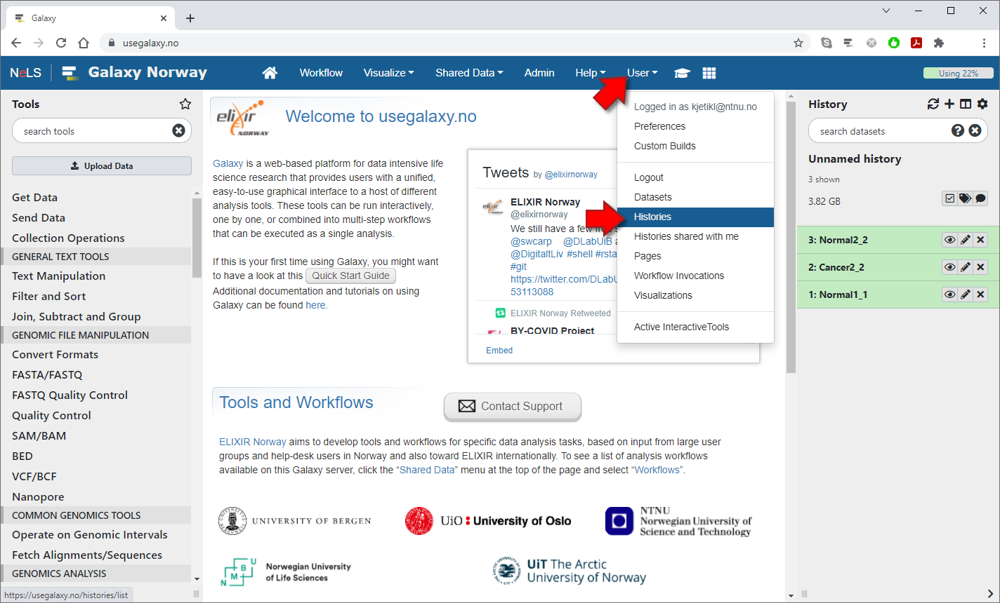
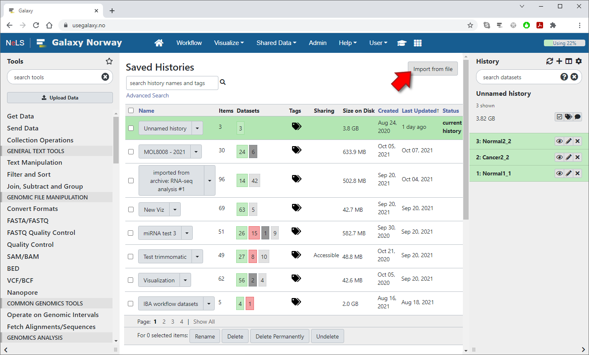
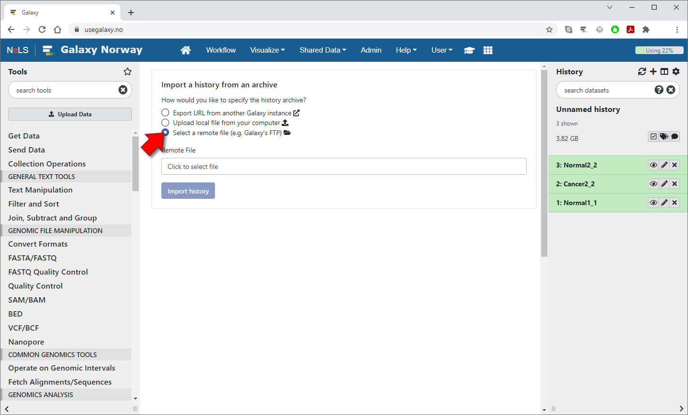
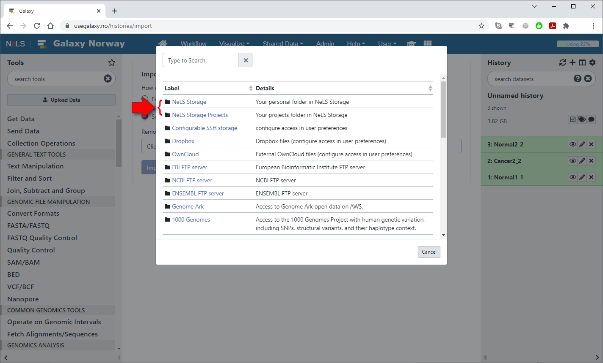
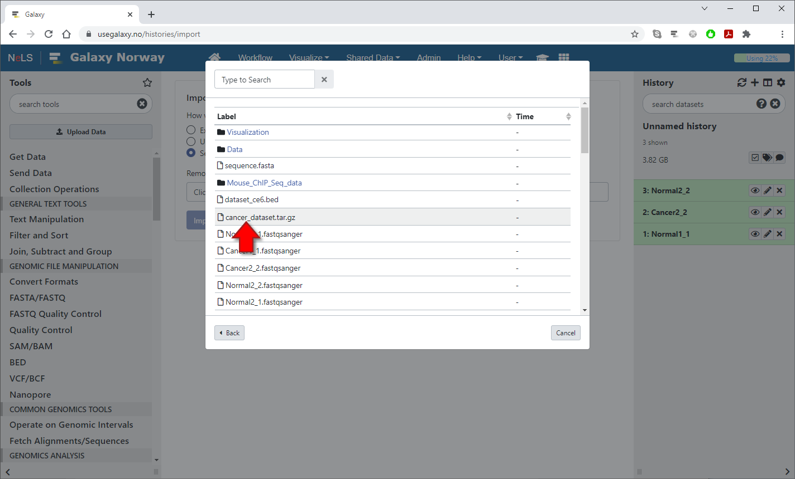
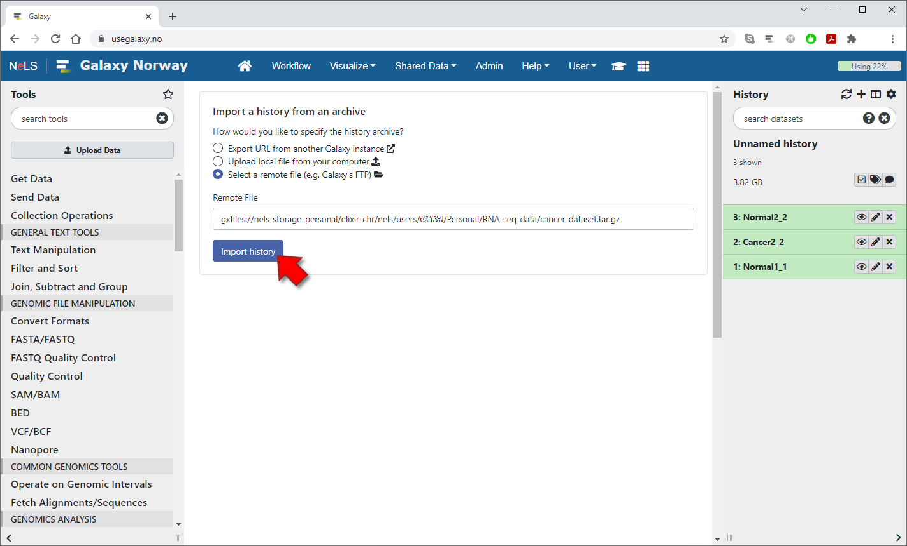

1 / 6

To import a history file from NeLS Storage into Galaxy, select "Histories" from the "User" menu at the top of the page
2 / 6

On the "Saved Histories" page, press the "Import from file" button in the upper-right corner
3 / 6

Choose the "select a remote file" option in order to import from a remote data storage
4 / 6

Select "NeLS Storage" or "NeLS Storage Projects" to import a history from either your Personal folder or your Projects folder
5 / 6

Click on a folder to navigate into it or click on a history file to select it. (Selecting a file will immediately close the dialog)
6 / 6

Press the "Import history" button to start importing the history in the background. Note that Galaxy will not switch to this history or notify you when the import is completed, but you can select which history to use from the "Saved Histories" page afterwards.
❮
❯